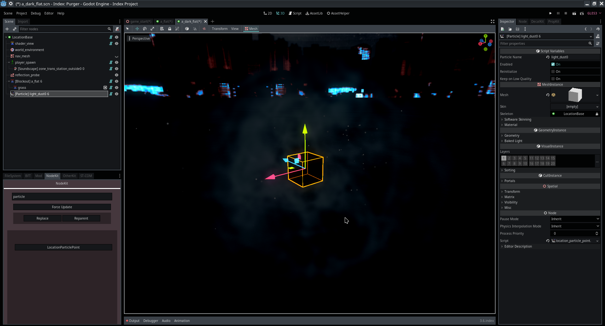
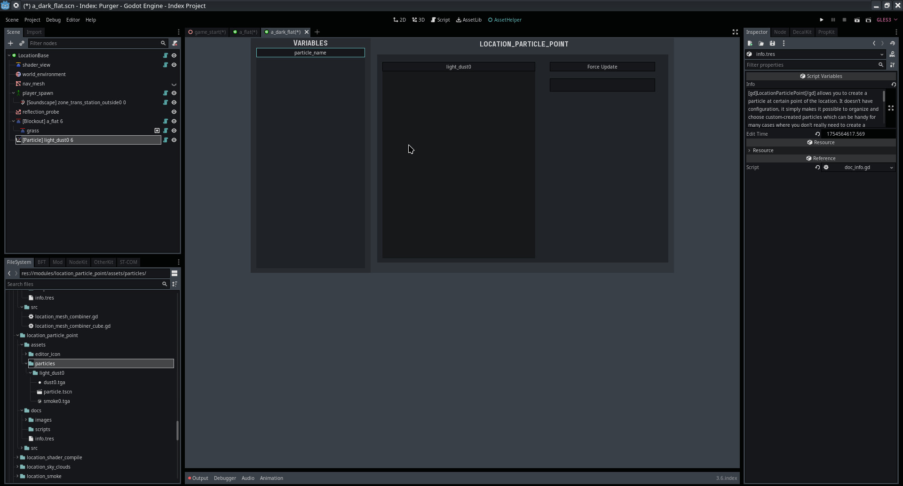

Module: location_particle_point
Documentation last edited: October 23, 2025 at 14:33 UTC
Description
LocationParticlePoint
allows you to create a particle at certain point of the location. It doesn't have configuration, it simply makes it possible to organize and choose custom-created particles which can be handy for many cases where you don't really need to create a whole custom node with controls for those.

How to make your own particle
Go to
"res://modules/location_particle_point/assets/particles/"
, each folder in there is a unique particle. Each folder must contain
"particle.tscn"
that will represent a particle.

Asset Helper makes it easier to choose a particle from the list, so keep it in mind.
There's not much to talk about here. As it was said, this node was made mostly for organizational reasons and it can potentially get more features in the future.
General Information
Root directories list
assets, docs, src
Nodes
Classes
None
Resources
None
Other Scripts
None